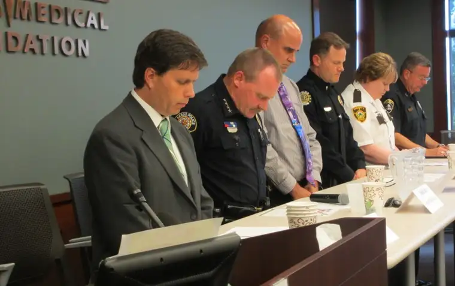

FARGO — It was a severe wake-up call for Fargo Police Chief David Todd — the eruption of opiate-related drug deaths and overdoses in our community that were “growing like wildfire.”
“We were seeing something that we hadn’t before,” he says of his decision to call together a press conference early this year. “We suspected it was something more than just heroin, and we were trying to warn people about it.”
Todd says the letters of desperation he began receiving from parents and grandparents begging him to arrest their loved ones, “to keep them in jail so they wouldn’t overdose and die,” forced him to realize the new epidemic was too big for law enforcement alone. “It tugs at your heartstrings.”
So when the faith community stepped forward to offer help, he was all in.
Several community-wide meetings had already taken place, beginning in May, to bring awareness to the issue, drawing hundreds. One hosted by Jail Chaplains Ministry at the end of August, specifically geared toward people of faith, pulled together around 145 participants from 47 different faith area communities.
Gerri Leach, executive director of Jail Chaplains, says the response was greatly encouraging. “Just to hear law enforcement boldly put it out there that ‘We need your help,’ and recognizing the faith community as a whole as being a significant part of this fight, was incredible.”
Now, there’s no going back. “If we say we support law enforcement, and they’ve told us they need our help, we’d best be getting our butts in gear,” Leach says. “It started a different thought process.”
Leach says that while addiction has always been an issue in our community, its recent reach to middle- and upper-income families seems to have finally opened wide the conversation.
“It’s no longer just about ‘those people’ but it’s affecting all of us,” she says. “It’s unfortunate this had to happen, but praise the Lord the conversations are taking place … it sheds light into those dark places.”
It’s about relationships
The Rev. Dale Wolf, a recovering addict himself, leads Fargo’s Lighthouse Church, which ministers primarily to those affected by addiction and their loved ones.
Wolf, who attended the August gathering, says that the ongoing conversation surrounding the opioid crisis needs the faith community, which can play an important role in both educating people and preparing them to minister to people struggling with an addiction or mental illness.
Incarceration won’t get people out of addiction, Wolf adds, and while treatment centers and other recovery programs play an important role, the long-term solution lies in relationships — in “communities of people, like church or other organizations” educating and ministering to those flailing from the effects of addiction.

“I was pastor for a lot of years before I found myself battling my own addiction,” Wolf says, “and I realize, as I look back now, how unprepared I was to address such issues within the church.”
Though not every church can do what Lighthouse is doing, he says, every church can do more.
“We’ve created these cocoons of righteousness that don’t always welcome the people who perhaps Jesus would be most welcoming to,” Wolf says. “Somehow we need to be able to become more transparent, more empathetic and more gracious with people who don’t have life put together yet.”
‘We are body and soul’
Mike Hagstrom had only been in his new role of president of the John Paul II Schools Network in Fargo a short time when he learned of the August gathering, but having just attended a funeral this past summer of a colleague’s son who was affected by addiction, and seeing how it has ravaged the community, Hagstrom says he gratefully attended.
“We have heard so much about it — the continued newspaper headlines of overdoses and sometimes deaths, the pleas from public officials for people to be aware — that I was heartened and encouraged that representative of all faiths would be coming forward … to work toward more positive outcomes,” he says.
Hagstrom says he was struck not only by the unified effort of people of faith, but seeing public officials and law enforcement pleading for faith communities to respond and help.
“They’re out there cleaning up all these messes, seeing the end result,” Hagstrom says. “So now they’re suggesting we try to help people in the early stages, perhaps, or (work on) prevention prior to that, and also ask, how can we better respond as a faith community?”
Hagstrom says that as human beings, we all deal with suffering and disappointment, whether through divorce, family dysfunction or illness. But how do we respond to these difficulties? “Do I deny it, flee from it, numb it or unite it to the sufferings of Jesus’ sacrifice on the cross?” he asks. “We need to help kids deal with suffering and loss.”
Attending with him was the Rev. Charles LaCroix, chaplain of Sullivan Middle and Shanley High schools, who says people are searching for a sense of peace. “When someone takes drugs, something is not settled in their soul,” he suggests. “The answer is to go deeper than just the body; to acknowledge the importance of the soul as well.”
One solution in motion
Leach says the Jail Chaplains’ outreach she oversees to bring the incarcerated hope, through encouraging a relationship with God, commonly confronts addiction issues, which is why the ministry became invested in helping solve the community drug crisis.
Around 85 to 95 percent of the inmates in the jail have a connection to addiction, she notes, whether they’ve been charged for using or dealing drugs, or theft to support an addiction.
Often, the incarcerated have lost sight of their value in God’s eyes. “The enemy might tell them they are only a drug dealer,” she says. “Here they are wearing orange, and they probably feel they can’t get any lower.”
Jail Chaplains can be a way back to God, and ultimately the kind of renewal that brings permanent transformation, she says. “Hearing someone saying God loves you right where you’re at, for the first time there’s maybe a little bit of hope, a little bit of light shining in.”
Supporting the ministry, such as through its annual dessert fundraiser, can be one way to help, she says, but we shouldn’t have to wait for someone to go to jail to treat them with compassion.
“Every one of us can be more intentional about engaging someone when we see them hurting. And not just that person but their loved ones,” she says. “Everybody who’s in jail is somebody’s son or daughter.”
Leach says workshops will take place soon to continue the conversation, addressing issues like signs of addiction and boundary-setting. The Jail Chaplains Facebook page and website will list those events for anyone interested.
“While not everyone has a plan, those seeds are being planted,” she says, “and we’re going to see things start to change.”
If you go
What: Jail Chaplains’ “Broken and Repurposed” dessert social and fundraiser
When: Tuesday, Oct. 25, silent auction at 5:30 p.m., 7 p.m. program
Where: Holiday Inn, 3803 13th Ave. S., Fargo
Cost: $15 per ticket, available at Family Christian store or jailchaplains.com
[For the sake of having a repository for my newspaper columns and articles, I reprint them here, with permission, a week after their run date. The preceding ran in The Forum newspaper on Oct. 15, 2016.]